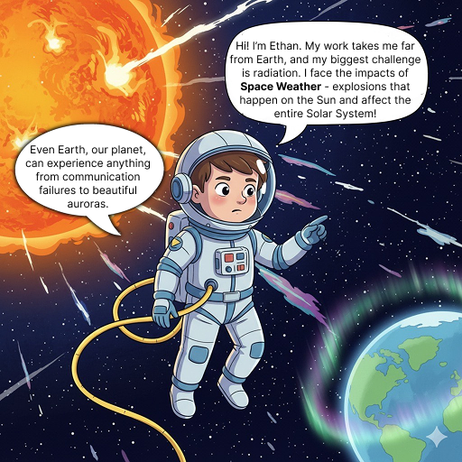
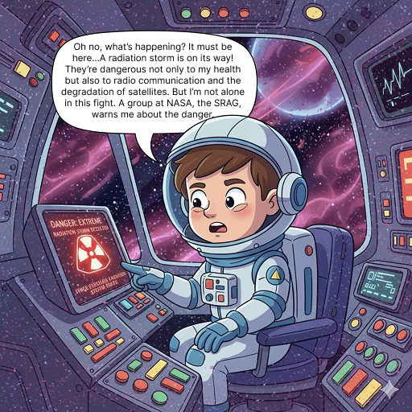
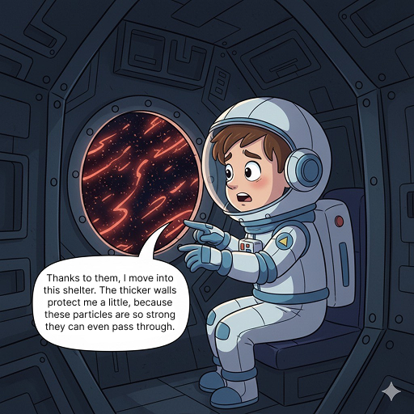
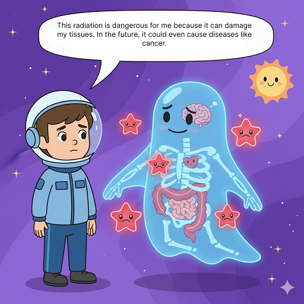
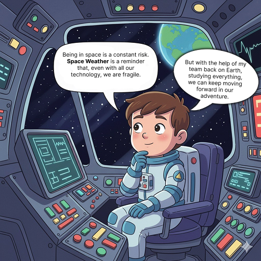

Back to Lobby 🌟
Anterior
Próximo
▶ Listen
!-- no ultimo slide aparece a opçao de ir p lobby ou menu de games ou pessoas --!
✅ You have completed at least one comic!
Game Menu
Back to Lobby
Back to People